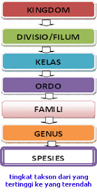

Makhluk hidup yang mempunyai ciri dan sifat yang sama dimasukkan ke dalam satu kelompok, dan bila dalam persamaan ditemukan perbedaan ciri dan sifat, makadipisahkan lagi ke dalam kelompok lain yang lebih kecil, sehingga dalam kegiatan klasifikasi akan diperoleh kelompok-kelompok makhluk hidup dengan jenjang yang berbeda. Pengelompokkan hasil klasifikasi pada tingkattingkat yang berbeda atau pada takson yang berbeda disebut taksonomi. Semakin tinggi jenjangnya semakin banyak anggotanya, tetapi persamaan sifat yang dimiliki anggotanya semakin sedikit.
Klasifikasi adalah suatu cara pengelompokan yang didasarkan pada ciri-ciri tertentu. Semua ahli biologi menggunakan suatu sistem klasifikasi untuk mengelompokkan tumbuhan ataupun hewan yang memiliki persamaan struktur. Kemudian setiap kelompok tumbuhan ataupu hewan tersebut dipasang-pasangkan dengan kelompok tumbuhan atau hewan lainnya yang memiliki persamaan dalam kategori lain. Hal itu pertama kali diusulkan oleh John Ray yang berasal dari Inggris. Namun ide itu disempurnakan oleh Carl Von Linne (1707-1778), seorang ahli botani berkebangsaan Swedia yang dikenal pada masa sekarang dengan Carolus Linnaeus.
Sistem klasifikasi Linnaeus tetap digunakan sampai sekarang karena sifatnya yang sederhana dan fleksibel sehingga suatu organism baru tetap dapat dimasukkan dalam sistem klasifikasi dengan mudah. Nama-nama yang digunakan dalam sistem klasifikasi Linnaeus ditulis dalam bahasa Latin karena pada zaman Linnaeus bahasa Latin adalah bahasa yang dipakai untuk pendidikan resmi.
Adapun tujuan Klasifikasi makhluk hidup adalah :
Para biologiawan masih menggunakan buku Linnaeus yang berjudul Systema Naturae (sistem Alam) yang diterbitkan tahun 1758 sebagai dasar untuk klasifikasi ilmiah. Ada tiga tahap yang harus dilakukan untuk mengklasifikasikan makhluk hidup.
Pencandraan adalah proses mengidentifikasi atau mendeskripsi ciri-ciri suatu makhluk hidup yang akan diklasifikasi.
setelah dilakukan pencandraan, makhluk hidup kemudian dikelompokkan dengan makhluk hidup lain yang memiliki ciri-ciri serupa. Makhluk hidup yang memiliki ciri serupa dikelompokkan dalam unit-unit yang disebut takson.
selanjutnya kelompok-kelompok ini diberi nama untuk memudahkan kita dalam mengenal ciri-ciri suatu kelompok makhluk hidup.
Dalam sistem klasifikasi, makhluk hidup dikelompokkan menjadi suatu kelompok besar kemudian kelompok besar ini dibagi menjadi kelompok-kelompok kecil. Kelompok-kelompok kecil ini kemudian dibagi lagi menjadi kelompok yang lebih kecil lagi sehingga pada akhirnya terbentuk kelompok- kelompok kecil yang beranggotakan hanya satu jenis makhluk hidup. Tingkatan-tingkatan pengelompokan ini disebut takson. Taksa (takson) telah distandarisasi di seluruh dunia berdasarkan International Code of Botanical Nomenclature dan International Committee on Zoological Nomenclature. Urutan takson antara lain :

TATA NAMA BINOMIAL NOMENCLATUREBanyak makhluk hidup mempunyai nama local. Nama ini bisa berbeda antara satu daerah dan daerah lainnya. Untuk memudahkan komunikasi, makhluk hidup harus diberikan nama yang unik dan dikenal di seluruh dunia. Berdasarkan kesepakatan internasional, digunakanlah metode binomial nomenclature. Metode binominal nomenclature (tata nama ganda), merupakan metode yang sangat penting dalam pemberian nama dan klasifikasi makhluk hidup. Disebut tata nama ganda karena pemberian nama jenis makhluk hidup selalu menggunakan dua kata (nama genus dan species). Aturan pemberian nama adalah sebagai berikut :